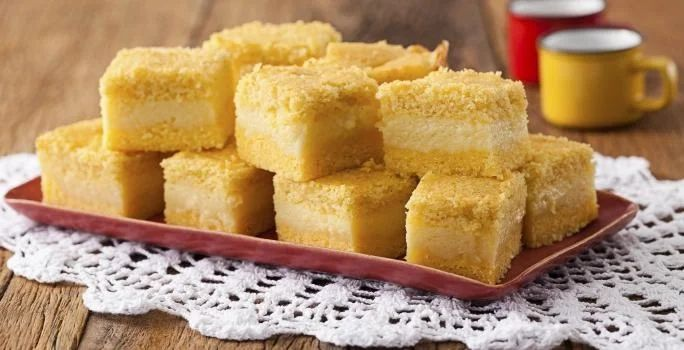

Receitas
Bolo de Fubá Cremoso

Ingredientes
- 4 xícaras (chá) de Leite Líquido NINHO® Forti+ Integral
- 4 ovos
- 2 xícaras (chá) de açúcar
- 2 colheres (sopa) de manteiga
- 1 xícara (chá) de queijo parmesão ralado
- 1 e meia xícara (chá) de fubá
- 2 colheres (sopa) de farinha de trigo
- 1 colher (sopa) de fermento em pó
Modo de Preparo
- Em um liquidificador, bata o Leite NINHO, os ovos, o açúcar, a manteiga e o queijo parmesão ralado.
- Acrescente o fubá, a farinha de trigo e o fermento em pó e bata até ficar homogêneo.
- Coloque em forma retangular (20 cm x 30 cm) untada com manteiga e polvilhada com fubá e leve ao forno médio (180°C), preaquecido, por cerca de 30 minutos.
Banoffe
Ingredientes
Massa
- 3 pacotes de Biscoito TOSTINES® Maisena triturados
- 4 colheres (sopa) de margarina derretida
Doce de Leite
- 3 latas de Leite MOÇA®
Cobertura e Montagem
- 400 ml de creme de leite fresco gelado
- 5 colheres (sopa) de NINHO® Forti+ Pó Integral
- 5 bananas maduras, cortadas em rodelas de espessura mediana
Modo de Preparo
Massa
- Misture o Biscoito TOSTINES Maizena triturado e a margarina derretida até formar uma massa com aspecto de areia molhada. Assente a massa no fundo da forma (se preferir, suba a massa para as laterais). Faça furos com um garfo, cuidando para que a massa não saia do lugar. Asse à 200°C por 10 minutos, retire do forno e reserve. Doce de Leite
- Retire os rótulos das latas, cuidando para que toda a cola saia também. Coloque-as em uma panela de pressão e acrescente água até cobrir. Cozinhe as latas por 40 minutos após pegar pressão (começar a chiar). Retire as latas da panela e as coloque em um recipiente com água bem gelada para dar o choque térmico. Após esfriar, bata o doce de leite na batedeira até formar um creme e reserve.
Cobertura e Montagem
- Bata o creme de leite fresco gelado conforme instruções na embalagem e após pronto, acrescente o NINHO Forti+ Instantâneo Pó e mexa até sumir.
- Espalhe o Doce de Leite à massa já assada. Coloque as bananas de forma que cubram todo o doce. Finalize com a Cobertura e deixe por uma hora na geladeira. Desenforme e sirva.